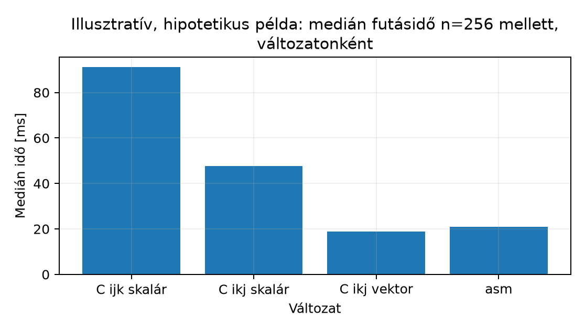

Az a058 alfejezetben elkészült
lab_sgemm modul addig csak feltételezett
tulajdonságokkal rendelkezik: az AAPCS64-szerződést betartja,
FMLA-val vektorizál, és a QEMU-ban lefut. Ez azonban
önmagában nem elég. Egy teljesítménykritikus modul akkor számít késznek,
ha számokkal bizonyítjuk, hogy (a) ugyanazt a kimenetet
adja, mint a C referencia, és (b) az átirat tényleges gyorsulást hoz a
mért hardveren/emulátoron. Ez az alfejezet a mérési és validációs
szerződés végrehajtását mutatja be: a tesztkészlet lefuttatását, a
referenciaegyezés dokumentálását, a benchmark-futtatást az a052 sablonjával, az eredmény vizuális
összefoglalását, és az elfogadási küszöb értékelését. A tanulság
átvihető bármely későbbi assembly-modulra: mérni nem lehet, ha a
korrektségről nincs tényszerű állítás, és validálni nem lehet, ha a mért
értékeket nem jelöljük megfelelően (emulált vs. valós).
A projekt lezárásában két különböző tevékenységet kell szigorúan szétválasztani:
Validáció (validation) — annak eldöntése, hogy a
modul funkcionálisan megfelel-e a specifikációnak. Eszköze egy
determinisztikus, reprodukálható tesztkészlet, amely a
lab_sgemm kimenetét az a057
numerikus szerződése szerint veti össze a
double pontosságú C referenciával (rögzített
FPCR, véges bemenet,
-hez
mért tűrés), és közben a memóriaszerződést (csak a C
írható) is ellenőrzi. Ugyanez a szerződés érvényes a mérés előtti
ellenőrzésre és az auditra is; bitre pontos
egyezést sehol nem követelünk.
Mérés (measurement) — annak számszerűsítése, hogy a modul mennyivel gyorsabb a referenciánál, adott bemenetméreteken, adott build- és futtatási profilban. A mérés soha nem igazol korrektséget; a validáció soha nem ad gyorsulási állítást.
A két tevékenység együtt adja a kiadási döntést: a modul akkor fogadható el, ha egyszerre teljesül a funkcionális egyezés és a teljesítmény-küszöb. A küszöb konkrét értékét az a057 projektspecifikáció rögzíti; a jelen alfejezet a küszöb kiértékelésének módszerét tanítja, nem annak számszerű megválasztását.
Továbbhasznált fogalmak:
(n, A, B) bemenet-kombináció, amelyre a kimenet elvárt
értéke a referencia implementációból számolható.memcmp) egyezés a double
referenciával nem várható, de nem az összegzési sorrend miatt: a
-sorrend
a modulban és a referenciában ugyanaz. Az ok a pontosság: a modul minden
fúzionált lépés után float-ra kerekít, a referencia
double-ban összegez.n ≥ 64 mellett a modul medián ideje legfeljebb a naiv i-j-k
C-változat medián idejének a fele.Munkakönyvtár: ~/arm-labor/a64/zaro1/ —
az alfejezet minden laborfájlja ide kerül, és minden parancs innen
futtatandó (a könyvtárrendet a Labor-alapkörnyezet alfejezet írja le). Ez az I.
záróprojekt közös könyvtára: mind a négy alfejezete (a057–a060) itt dolgozik, és
egymás fájljaira épít.
mkdir -p ~/arm-labor/a64/zaro1
cd ~/arm-labor/a64/zaro1A tesztkészlet az a057 projektspecifikáció által rögzített határesetek és speciális mátrixtartalmak végrehajtása, nem egy új terv kitalálása. A végrehajtott tesztmátrix pontosan a specifikáció táblázatait követi:
n ∈ {0, 1, 2, 3, 5, 7, 8, 16, 17, 63, 64, 65, 128, 256},
továbbá n ∈ {4, 6, 12}, mintázott tartalommal. Ezekhez jön
egy méret nélküli csoport: A, B és
C egyenként NULL-pointerrel
(három különálló hívás), és egy n = 2^31, amelyre az a058 szerint n*n*sizeof(float) 64
biten túlcsordul.±1e6) és a
szerződés felső határát terhelő, egynemű előjelű near-max
()
n ∈ {32, 64} mellett; rögzített magú véletlen tartalom
n ∈ {32, 64, 128, 256} mellett. Az identitásmátrix
(,
tehát
)
a DUP-os sávkitöltés és az indexelés hibáit teszi
láthatóvá.n = 8,
minden elem 1e20 (overflow), az a057 4×4-es FMA-határ-ellenpéldája
(fma-edge), amelyet a régi
feltétel még átengedett, valamint egy n = 2-es határeset
(half-edge: A első sora
,
B első oszlopa
,
a többi elem 0). Az utóbbinál a pontos
a határ fölött van, de double-ben
;
egy egyszerű abs_sum <= LAB_SMAX összevetés ezért
elfogadná. Mindhárom esetnél előbb azt ellenőrizzük, hogy a
lab_sgemm_in_contract elutasítja-e. Utána a kimenetet nem a
numerikus ellenőrző értékeli: a dokumentált elvárás a modul számítási
modellje, vagyis a
-sorrendű
fmaf-lánc bitre pontos eredménye (overflow:
minden elem
;
fma-edge: a 0. sor
,
a többi 0; half-edge: véges eredmény).A lab_sgemm_in_contract konzervatív (elégséges)
szűrő, nem „akkor és csak akkor” predikátum. A
float·float szorzatok double-ben pontosak (24
+ 24 ≤ 53 bit), n nemnegatív tag
double-összegének relatív hibája legfeljebb
,
a
-vel
való szorzás saját kerekítésével együtt
fedi le. A függvény ezért akkor ad 1-et, ha
;
ilyenkor a pontos
biztosan a határon belül van. Egy pontosan belső, de a
határtól relatíve
-nál
közelebbi esetet viszont elutasíthat: ez a dokumentált konzervatív
irány. A near-max eset (relatíve kb.
-nal
a határ alatt) ettől szerződésen belül marad.
Minden érvényes esetnél a teszthajtó a bemenet
osztályozását is ellenőrzi: a 2. pont esetei
szerződésen belüliek, a 3. pontéi azon kívül esnek. Ha a
lab_sgemm_in_contract ettől eltér, az eset
osztályozás okkal FAIL.
float-ra kerekített eredményébe szándékosan NaN-t,
+Inf-et, -Inf-et és tűrésen kívüli eltérést
írunk; mindegyiknek le kell buknia. Ez a vizsgált modultól független,
tehát egy hibás modul nem tudja elrontani.A memóriaszerződést minden eset ellenőrzi. A teszthajtó a mátrixokat
őrzött pufferbe teszi: az adat előtt őrbájtok állnak,
az adat vége pedig pontosan egy PROT_NONE védőlapnál ér
véget, így a sor- vagy mátrixvégen túlnyúló
ldr q/str q laphibát okoz. A C
puffer a hívás előtt 0xFF bájtokkal (NaN-bitmintával)
töltődik, ezért egy meg nem írt elem is FAIL. A hívás után a teszthajtó
az A-t és a B-t bájtra összeveti a
másolatával. Érvénytelen bemenetnél a kimeneti puffer speciális
bitmintákat tartalmaz (-0.0, NaN-payloadok,
+Inf, denormális szám). A teljes tartomány bájtjait az
őrbájtokkal együtt memcmp-pel vetjük össze, nem
float-egyenlőséggel, mert a NaN önmagával sem egyenlő, a
-0.0 == +0.0 pedig igaz. A C oldali AddressSanitizer ezt
nem helyettesíti, mert a kézzel írt assembly memóriaeléréseit nem
instrumentálja.
A referencia ugyanaz a double pontosságú,
float bemenetű hármas ciklus, amelyet a specifikáció
rögzített. A numerikus szerződés ellenőrzője külön fordítási egység,
mert a mérőprogram is használja:
/* lab_sgemm_ref.c — double pontosságú korrektségi referencia (a057). */
#include "lab_sgemm.h"
void lab_sgemm_ref(size_t n, const float *A, const float *B, double *C)
{
for (size_t i = 0; i < n; ++i) {
for (size_t j = 0; j < n; ++j) {
double acc = 0.0;
for (size_t k = 0; k < n; ++k) /* ugyanaz a k-sorrend, mint a modulban */
acc += (double)A[i * n + k] * (double)B[k * n + j];
C[i * n + j] = acc;
}
}
}/* lab_sgemm_check.h — az a057 numerikus szerződésének ellenőrzője. */
#ifndef LAB_SGEMM_CHECK_H
#define LAB_SGEMM_CHECK_H
#include <float.h>
#include <stddef.h>
#define LAB_RTOL 1e-4 /* n <= LAB_TOL_NMAX esetén: n * 2^-24 <= 1.6e-5 < LAB_RTOL */
#define LAB_ATOL 1e-30 /* csak az alulcsordulási tartomány elnyelésére */
#define LAB_TOL_NMAX 256
/* s_ij felső korlátja: kerekítési tartalék a float-FMA lánchoz */
#define LAB_SMAX (FLT_MAX / 2)
void lab_sgemm_ref(size_t n, const float *A, const float *B, double *C);
/* 1, ha FPCR: RMode = RNE, FZ = 0, DN = 0 (és AH/FIZ/NEP = 0). */
int lab_fpcr_ok(void);
/* Konzervatív (elégséges) szűrő: 1 csak akkor, ha minden bemeneti elem véges, és
* minden PONTOS s_ij = sum_k |a_ik||b_kj| bizonyítottan <= LAB_SMAX. A határ körüli
* relatív (n+2)*2^-53 sávban egy pontosan belső esetet is elutasíthat (0-t ad). */
int lab_sgemm_in_contract(size_t n, const float *A, const float *B);
/* 0, ha minden elem véges és |c_ij - r_ij| <= LAB_ATOL + LAB_RTOL * s_ij;
különben 1, és *bad az első hibás elem indexe. */
int lab_sgemm_check(size_t n, const float *A, const float *B,
const float *C, const double *R, size_t *bad);
#endif/* lab_sgemm_check.c — az a057 numerikus szerződésének ellenőrzője. */
#include <float.h>
#include <math.h>
#include <stdint.h>
#include "lab_sgemm_check.h"
int lab_fpcr_ok(void)
{
uint64_t fpcr;
__asm__ volatile("mrs %0, fpcr" : "=r"(fpcr));
const uint64_t mask = (3u << 22) /* RMode: 00 = RNE */
| (1u << 24) /* FZ: nincs flush-to-zero */
| (1u << 25) /* DN: nincs default NaN */
| 0x7u; /* NEP, AH, FIZ */
return (fpcr & mask) == 0;
}
static double abs_sum(size_t n, const float *A, const float *B, size_t i, size_t j)
{
double s = 0.0;
for (size_t k = 0; k < n; ++k)
s += fabs((double)A[i * n + k]) * fabs((double)B[k * n + j]);
return s;
}
int lab_sgemm_in_contract(size_t n, const float *A, const float *B)
{
for (size_t e = 0; e < n * n; ++e)
if (!isfinite(A[e]) || !isfinite(B[e]))
return 0;
/* A float*float szorzatok double-ben pontosak (24 + 24 <= 53 bit); n nemnegatív
* tag összegének hibája <= gamma_{n-1} * pontos összeg. A (1 + g) szorzás saját
* kerekítésével együtt gamma_{n+2} fedi: számított * (1 + g) <= LAB_SMAX esetén a
* pontos összeg biztosan <= LAB_SMAX. */
const double nu = (double)(n + 2) * 0x1p-53;
const double g = nu / (1.0 - nu);
for (size_t i = 0; i < n; ++i)
for (size_t j = 0; j < n; ++j)
if (!(abs_sum(n, A, B, i, j) * (1.0 + g) <= LAB_SMAX))
return 0;
return 1;
}
int lab_sgemm_check(size_t n, const float *A, const float *B,
const float *C, const double *R, size_t *bad)
{
for (size_t i = 0; i < n; ++i)
for (size_t j = 0; j < n; ++j) {
size_t e = i * n + j;
double c = (double)C[e];
double bound = LAB_ATOL + LAB_RTOL * abs_sum(n, A, B, i, j);
/* A !(x <= y) alak NaN-ra is igaz: a NaN-os elem FAIL. */
if (!isfinite(c) || !(fabs(c - R[e]) <= bound)) {
*bad = e;
return 1;
}
}
return 0;
}A teszthajtó:
/* lab_sgemm_test.c — korrektségi teszthajtó az a057 numerikus szerződésével. */
#define _DEFAULT_SOURCE
#include <math.h>
#include <stdint.h>
#include <stdio.h>
#include <stdlib.h>
#include <string.h>
#include <sys/mman.h>
#include <unistd.h>
#include "lab_sgemm.h"
#include "lab_sgemm_check.h"
/* Őrzött puffer: [őrbájtok | adat | PROT_NONE védőlap]. Az adat vége pontosan
a védőlapnál ér véget, így a túlindexelt olvasás vagy írás laphibát okoz;
az adat előtti írást az őrbájtok megváltozása mutatja. */
#define LAB_GUARD_BYTE 0xA5
typedef struct { unsigned char *map, *data; size_t maplen, front; } guarded_t;
static float *guarded_alloc(guarded_t *g, size_t bytes)
{
size_t pg = (size_t)sysconf(_SC_PAGESIZE);
size_t body = (64 + bytes + pg - 1) / pg * pg; /* legalább 64 őrbájt */
g->maplen = body + pg;
g->map = mmap(NULL, g->maplen, PROT_READ | PROT_WRITE,
MAP_PRIVATE | MAP_ANONYMOUS, -1, 0);
if (g->map == MAP_FAILED) { perror("mmap"); exit(2); }
if (mprotect(g->map + body, pg, PROT_NONE)) { perror("mprotect"); exit(2); }
g->front = body - bytes;
g->data = g->map + g->front;
memset(g->map, LAB_GUARD_BYTE, g->front);
return (float *)(void *)g->data;
}
static int guard_intact(const guarded_t *g)
{
for (size_t i = 0; i < g->front; ++i)
if (g->map[i] != LAB_GUARD_BYTE) return 0;
return 1;
}
static void guarded_free(guarded_t *g) { munmap(g->map, g->maplen); }
typedef enum {
CONTENT_PATTERN, CONTENT_ZERO, CONTENT_ONES, CONTENT_MINUS_ONES,
CONTENT_IDENTITY, CONTENT_RANDOM, CONTENT_LARGE, CONTENT_NEAR_MAX,
CONTENT_OVERFLOW, CONTENT_FMA_EDGE, CONTENT_HALF_EDGE
} content_t;
static void fill_content(float *A, float *B, size_t n, content_t kind)
{
size_t nelem = n * n;
uint32_t seed = 0x2545F491u;
for (size_t j = 0; j < nelem; ++j) {
switch (kind) {
case CONTENT_ZERO: A[j] = 0.0f; B[j] = 0.0f; break;
case CONTENT_ONES: A[j] = 1.0f; B[j] = 1.0f; break;
case CONTENT_MINUS_ONES: A[j] = -1.0f; B[j] = -1.0f; break;
case CONTENT_IDENTITY: /* B = I, tehát C = A */
A[j] = (float)((int)(j % 17) - 8) / 8.0f;
B[j] = (j / n == j % n) ? 1.0f : 0.0f;
break;
case CONTENT_RANDOM: /* LCG, [-1, 1) egyenletes, rögzített mag */
seed = seed * 1664525u + 1013904223u;
A[j] = ((float)(seed >> 8) / (float)(1u << 24)) * 2.0f - 1.0f;
seed = seed * 1664525u + 1013904223u;
B[j] = ((float)(seed >> 8) / (float)(1u << 24)) * 2.0f - 1.0f;
break;
case CONTENT_LARGE: /* nagyérték-teszt: n*1e12 << FLT_MAX */
A[j] = 1.0e6f; B[j] = (j % 2) ? -1.0e6f : 1.0e6f;
break;
case CONTENT_NEAR_MAX: /* szerződésen belül, a határ közelében: egynemű előjel,
s_ij = n * A = 0x1.fffffcp126 <= FLT_MAX/2 */
A[j] = (float)(0x1.fffffcp126 / (double)n); B[j] = 1.0f;
break;
case CONTENT_OVERFLOW: /* szándékosan a szerződésen kívül */
A[j] = 1.0e20f; B[j] = 1.0e20f;
break;
case CONTENT_FMA_EDGE: /* n = 4: s_00 = 0x1.fffffd18p127 < FLT_MAX, mégis +Inf
(V8 határ-ellenpélda); a szerződés elutasítja */
A[j] = (j == 0) ? 0x1.fffffap127f : (j < n) ? 0x1.08p103f : 0.0f;
B[j] = 1.0f;
break;
case CONTENT_HALF_EDGE: /* n = 2: s_00 = FLT_MAX/2 + 1 > LAB_SMAX, de double-ben
FLT_MAX/2 + 1 == FLT_MAX/2; a szűrő elutasítja */
A[j] = (j == 0) ? FLT_MAX / 2 : (j == 1) ? 1.0f : 0.0f;
B[j] = (j % n == 0) ? 1.0f : 0.0f;
break;
case CONTENT_PATTERN:
default: /* int-kasztolás a kivonás előtt (size_t!) */
A[j] = (float)((int)(j % 17) - 8) / 8.0f;
B[j] = (float)((int)(j % 13) - 6) / 6.0f;
break;
}
}
}
static const char *content_name[] = {
"pattern", "zero", "ones", "minus-ones", "identity", "random", "large", "near-max",
"overflow", "fma-edge", "half-edge"
};
/* A modul számítási modellje (a057, 3. pont): c_ij = 0-ról, k-sorrendben
float FMA. A szerződésen kívüli esetek dokumentált elvárása ez a modell. */
static void sgemm_fma_model(size_t n, const float *A, const float *B, float *M)
{
for (size_t i = 0; i < n; ++i)
for (size_t j = 0; j < n; ++j) {
float c = 0.0f;
for (size_t k = 0; k < n; ++k)
c = fmaf(A[i * n + k], B[k * n + j], c);
M[i * n + j] = c;
}
}
/* Érvényes eset: őrzött A, B, C; C előre NaN-bájtokkal (0xFF) töltve, így a
meg nem írt elem is FAIL. Ellenőrzés: rc, A és B változatlansága, őrbájtok,
a bemenet osztályozása (szerződésen belül/kívül), majd szerződésen belül a
numerikus szerződés, kívül a float-FMA modellel való bitre egyezés. */
static int run_case(size_t n, content_t kind)
{
size_t bytes = n * n * sizeof(float);
guarded_t gA, gB, gC;
float *A = guarded_alloc(&gA, bytes), *B = guarded_alloc(&gB, bytes);
float *C = guarded_alloc(&gC, bytes);
float *A0 = malloc(bytes ? bytes : 1), *B0 = malloc(bytes ? bytes : 1);
double *R = malloc(n ? n * n * sizeof(double) : 1);
float *M = malloc(bytes ? bytes : 1);
if (!A0 || !B0 || !R || !M) { perror("malloc"); exit(2); }
int want_in = kind != CONTENT_OVERFLOW && kind != CONTENT_FMA_EDGE
&& kind != CONTENT_HALF_EDGE;
fill_content(A, B, n, kind);
memcpy(A0, A, bytes); memcpy(B0, B, bytes);
memset(C, 0xFF, bytes);
int in_contract = lab_sgemm_in_contract(n, A, B);
int rc = lab_sgemm(n, A, B, C);
lab_sgemm_ref(n, A, B, R);
size_t bad = 0, ninf = 0;
const char *why = NULL;
if (in_contract != want_in) why = "osztályozás";
else if (rc != LAB_SGEMM_OK) why = "rc";
else if (memcmp(A, A0, bytes) || memcmp(B, B0, bytes)) why = "bemenet módosult";
else if (!guard_intact(&gA) || !guard_intact(&gB) || !guard_intact(&gC)) why = "őrbájt";
else if (in_contract) {
if (lab_sgemm_check(n, A, B, C, R, &bad)) why = "numerikus";
} else {
/* Szerződésen kívül nincs numerikus elfogadás; dokumentált elvárás a
float-FMA modell bitre pontos eredménye (overflow: minden elem +Inf,
fma-edge: a 0. sor +Inf, a többi 0). */
sgemm_fma_model(n, A, B, M);
for (size_t e = 0; e < n * n && !why; ++e)
if (memcmp(&C[e], &M[e], sizeof(float))) {
bad = e;
why = "eltér a float-FMA modelltől";
}
for (size_t e = 0; e < n * n; ++e)
ninf += isinf(C[e]) != 0;
}
printf("[%s] n=%4zu rc=%2d %s", content_name[kind], n, rc, why ? "FAIL" : "OK");
if (!want_in && !why) printf(" (szerződésen kívül, +Inf elemek: %zu)", ninf);
if (why && n) printf(" (%s, első hibás elem: %zu, asm=%g ref=%g)", why, bad,
(double)C[bad], R[bad]);
putchar('\n');
guarded_free(&gA); guarded_free(&gB); guarded_free(&gC);
free(A0); free(B0); free(R); free(M);
return why != NULL;
}
/* Érvénytelen bemenet: a C puffert (ha van) speciális bitmintákkal töltjük
(-0.0, NaN-payload, Inf), és a teljes kimeneti tartomány bájtjait az
őrbájtokkal együtt memcmp-pel vetjük össze a hívás előtti másolattal. */
static int run_invalid_case(size_t n, int a_null, int b_null, int c_null,
const char *label)
{
static const uint32_t pat[] = { 0x80000000u, 0x7fc12345u, 0xffa00001u,
0x7f800000u, 0x449a5000u, 0x00000001u };
guarded_t g;
float *buf = guarded_alloc(&g, 16 * sizeof(float));
for (size_t e = 0; e < 16; ++e)
memcpy(&buf[e], &pat[e % 6], sizeof(uint32_t));
size_t len = g.front + 16 * sizeof(float);
unsigned char *before = malloc(len);
if (!before) { perror("malloc"); exit(2); }
memcpy(before, g.map, len);
float dummy[4] = { 1, 2, 3, 4 };
int rc = lab_sgemm(n, a_null ? NULL : dummy, b_null ? NULL : dummy,
c_null ? NULL : buf);
int unchanged = memcmp(before, g.map, len) == 0;
int ok = rc == LAB_SGEMM_EINVAL && unchanged;
printf("invalid[%s] n=%zu rc=%2d %s\n", label, n, rc, ok ? "OK" : "FAIL");
free(before); guarded_free(&g);
return !ok;
}
/* Az ellenőrző önellenőrzése, a vizsgált modultól függetlenül: a referencia
float-ra kerekített eredményének át kell mennie, a szándékosan elrontott
példányoknak pedig le kell bukniuk. */
static int run_checker_selftest(void)
{
enum { N = 17 };
const size_t n = N;
float A[N * N], B[N * N], C[N * N], D[N * N];
double R[N * N];
size_t bad;
fill_content(A, B, n, CONTENT_RANDOM);
lab_sgemm_ref(n, A, B, R);
for (size_t e = 0; e < n * n; ++e) C[e] = (float)R[e];
int fail = lab_sgemm_check(n, A, B, C, R, &bad) != 0;
const float inject[] = { NAN, INFINITY, -INFINITY, 0.5f };
const char *name[] = { "NaN", "+Inf", "-Inf", "+0.5" };
for (int t = 0; t < 4; ++t) {
memcpy(D, C, sizeof C);
D[5 * n + 11] = (t == 3) ? D[5 * n + 11] + inject[t] : inject[t];
int caught = lab_sgemm_check(n, A, B, D, R, &bad) && bad == 5 * n + 11;
printf("selftest[%s beinjektálva] %s\n", name[t],
caught ? "lebukott: OK" : "NEM bukott le: FAIL");
fail |= !caught;
}
return fail;
}
int main(void)
{
int fail = 0;
setvbuf(stdout, NULL, _IOLBF, 0); /* összeomláskor is látszik az utolsó sor */
if (!lab_fpcr_ok()) { puts("FPCR nem a szerződés szerinti (RNE, FZ=0, DN=0)"); return 2; }
fail |= run_checker_selftest();
/* 1. réteg: határesetek és nagyobb méretek, mintázott tartalommal. */
const size_t sizes[] = { 0, 1, 2, 3, 5, 7, 8, 16, 17, 63, 64, 65, 128, 256 };
for (size_t i = 0; i < sizeof sizes / sizeof sizes[0]; ++i)
fail |= run_case(sizes[i], CONTENT_PATTERN);
/* 2. réteg: kis méretek, további farok-/blokkesetek. */
const size_t small[] = { 4, 6, 12 };
for (size_t i = 0; i < sizeof small / sizeof small[0]; ++i)
fail |= run_case(small[i], CONTENT_PATTERN);
/* 3. réteg: hét speciális tartalom n = 32 és 64 mellett (köztük a
FLT_MAX/2-közeli near-max), véletlen tartalom n = 128 és 256 mellett is. */
const size_t special[] = { 32, 64 };
for (size_t i = 0; i < 2; ++i)
for (content_t k = CONTENT_ZERO; k <= CONTENT_NEAR_MAX; ++k)
fail |= run_case(special[i], k);
fail |= run_case(128, CONTENT_RANDOM);
fail |= run_case(256, CONTENT_RANDOM);
/* Szerződésen kívüli esetek: az osztályozásnak el kell utasítania őket,
a kimenet dokumentált elvárása a float-FMA modell. */
fail |= run_case(8, CONTENT_OVERFLOW);
fail |= run_case(4, CONTENT_FMA_EDGE);
fail |= run_case(2, CONTENT_HALF_EDGE);
/* Érvénytelen bemenetek. n = 2^31: n*n*4 már nem fér el 64 biten. */
fail |= run_invalid_case(1, 1, 0, 0, "A=NULL");
fail |= run_invalid_case(1, 0, 1, 0, "B=NULL");
fail |= run_invalid_case(1, 0, 0, 1, "C=NULL");
fail |= run_invalid_case((size_t)1 << 31, 0, 0, 0, "n-overflow");
puts(fail ? "TESTS: FAIL" : "TESTS: PASS");
return fail;
}A build és futtatás az a058 buildláncot
követi. A qemu-aarch64 user-mode emuláció -L
kapcsolójával adhatjuk meg a sysrootot (a -L értéke
disztró-függő):
# Build: assembly-modul + referencia + ellenőrző + teszthajtó.
aarch64-linux-gnu-gcc -O2 -c lab_sgemm.S -o lab_sgemm.o
aarch64-linux-gnu-gcc -std=gnu17 -O2 -Wall -Wextra -static \
lab_sgemm_test.c lab_sgemm_check.c lab_sgemm_ref.c lab_sgemm.o -lm -o lab_sgemm_test
readelf -lW lab_sgemm_test | awk '$1=="GNU_STACK" {print "GNU_STACK", $7}' # elvárt: RW
# Futtatás qemu-user módban.
qemu-aarch64 -L /usr/aarch64-linux-gnu ./lab_sgemm_test; echo "exit=$?"Kimenet a helyettesítő eszközlánccal (zig cc/Clang + musl, statikus
build, Unicorn-alapú emulátor, amely a mprotect-tel
beállított védőlapot is érvényesíti) mérve:
selftest[NaN beinjektálva] lebukott: OK
selftest[+Inf beinjektálva] lebukott: OK
selftest[-Inf beinjektálva] lebukott: OK
selftest[+0.5 beinjektálva] lebukott: OK
[pattern] n= 0 rc= 0 OK
[pattern] n= 1 rc= 0 OK
[pattern] n= 2 rc= 0 OK
[pattern] n= 3 rc= 0 OK
[pattern] n= 5 rc= 0 OK
[pattern] n= 7 rc= 0 OK
[pattern] n= 8 rc= 0 OK
[pattern] n= 16 rc= 0 OK
[pattern] n= 17 rc= 0 OK
[pattern] n= 63 rc= 0 OK
[pattern] n= 64 rc= 0 OK
[pattern] n= 65 rc= 0 OK
[pattern] n= 128 rc= 0 OK
[pattern] n= 256 rc= 0 OK
[pattern] n= 4 rc= 0 OK
[pattern] n= 6 rc= 0 OK
[pattern] n= 12 rc= 0 OK
[zero] n= 32 rc= 0 OK
[ones] n= 32 rc= 0 OK
[minus-ones] n= 32 rc= 0 OK
[identity] n= 32 rc= 0 OK
[random] n= 32 rc= 0 OK
[large] n= 32 rc= 0 OK
[near-max] n= 32 rc= 0 OK
[zero] n= 64 rc= 0 OK
[ones] n= 64 rc= 0 OK
[minus-ones] n= 64 rc= 0 OK
[identity] n= 64 rc= 0 OK
[random] n= 64 rc= 0 OK
[large] n= 64 rc= 0 OK
[near-max] n= 64 rc= 0 OK
[random] n= 128 rc= 0 OK
[random] n= 256 rc= 0 OK
[overflow] n= 8 rc= 0 OK (szerződésen kívül, +Inf elemek: 64)
[fma-edge] n= 4 rc= 0 OK (szerződésen kívül, +Inf elemek: 4)
[half-edge] n= 2 rc= 0 OK (szerződésen kívül, +Inf elemek: 0)
invalid[A=NULL] n=1 rc=-1 OK
invalid[B=NULL] n=1 rc=-1 OK
invalid[C=NULL] n=1 rc=-1 OK
invalid[n-overflow] n=2147483648 rc=-1 OK
TESTS: PASS
exit=0A TESTS: PASS sor a kiértékelés egyetlen szerződéses
állítása: a modul a felsorolt tesztmátrixon az a057 numerikus szerződése szerint egyezik a
referenciával, nem ír a C-n kívülre, nem módosítja a
bemenetet, érvényes bemenetnél W0 = LAB_SGEMM_OK (0,
n == 0-ra is), érvénytelennél
W0 = LAB_SGEMM_EINVAL (-1), és a puffer bájtra változatlan
marad.
Ellenpróba: a teszt valóban elkapja a hibát. A modulon két, az ellenőrzőn egy szándékos hibával újrafuttattuk a tesztet (ugyanazzal az eszközlánccal):
| Beültetett hiba | Megfigyelt eredmény |
|---|---|
a C-sor nullázásának skalár farka
(str wzr, ...) kihagyva |
[pattern] n=1 ... FAIL (numerikus, első hibás elem: 0, asm=-nan ref=1),
majd minden nem 4-gyel osztható n FAIL; a régi
d > max_err minta ezt a NaN-t nem jelezte volna |
a lab_sgemm_in_contract egyszerű
abs_sum <= LAB_SMAX összevetéssel,
-tartalék
nélkül |
[half-edge] n=2 ... FAIL (osztályozás, …): a pontos
határ fölötti esetet elfogadta volna |
a lab_sgemm_in_contract határa a régi
< FLT_MAX |
[fma-edge] n=4 ... FAIL (osztályozás, első hibás elem: 0, asm=inf ref=3.40282e+38):
a régi tartomány a végtelen kimenetű bemenetet szerződésen belülinek
fogadta volna el |
a j-ciklus feltétele j + 4 <= n helyett
j < n (a vektoros ág a sor végén túlnyúlik) |
az első érvényes esetnél írás a védőlapra: laphiba, a folyamat
SIGSEGV-vel áll le |
Az a052 alfejezet mikrobenchmark-sablonja
négy komponensből áll: melegítő futás, ismételt futás,
időmérés (monoton forrás), és statisztikai összegzés
(medián vagy átlag, valamint szórás). A sablon itt kibővül a
beviteli méretsorozat ciklusával, hogy minden tervezett
n értékre megkapjuk a t_asm(n) és
t_ref(n) értékeket.
A mérendő bemenetek az a057 szerint:
n ∈ {16, 32, 64, 128, 256}. Az időmérés forrása
clock_gettime(CLOCK_MONOTONIC, ...), mivel a
CLOCK_PROCESS_CPUTIME_ID qemu-user módban gyakran nem ad
valós processzoridőt.
A mérés nem a korrektségi
referenciát (lab_sgemm_ref, double
kimenetű) méri időben, mert az nem tisztességes
float–float összehasonlítás. Az a057 szerint négy változatot mérünk, hogy a
ciklussorrend, a fordítói vektorizálás és a kézi assembly hatása
szétváljon. A két C-ciklus egy forrásban van, és két objektum készül
belőle eltérő kapcsolókkal:
/* lab_sgemm_c.c — C összehasonlító változatok (csak mérési baseline).
* Ugyanebből a forrásból két objektum készül, eltérő névutótaggal:
* -DLAB_SUFFIX=_scalar vektorizálás tiltva (skalár kontroll)
* -DLAB_SUFFIX=_vec vektorizálás engedélyezve (optimalizált C) */
#include <stddef.h>
#ifndef LAB_SUFFIX
#define LAB_SUFFIX _scalar
#endif
#define LAB_CAT2(a, b) a##b
#define LAB_CAT(a, b) LAB_CAT2(a, b)
/* i-j-k: a belső ciklus B egy oszlopán lépked (n*4 bájtos ugrásokkal). */
void LAB_CAT(lab_sgemm_ijk, LAB_SUFFIX)(size_t n, const float *restrict A,
const float *restrict B, float *restrict C)
{
for (size_t i = 0; i < n; ++i)
for (size_t j = 0; j < n; ++j) {
float acc = 0.0f;
for (size_t k = 0; k < n; ++k)
acc += A[i * n + k] * B[k * n + j];
C[i * n + j] = acc;
}
}
/* i-k-j: ugyanaz a ciklussorrend és k-sorrend, mint a lab_sgemm.S-ben;
a belső ciklus B és C egy-egy sorát folytonosan járja. */
void LAB_CAT(lab_sgemm_ikj, LAB_SUFFIX)(size_t n, const float *restrict A,
const float *restrict B, float *restrict C)
{
for (size_t i = 0; i < n; ++i) {
float *c = C + i * n;
for (size_t j = 0; j < n; ++j)
c[j] = 0.0f;
for (size_t k = 0; k < n; ++k) {
const float a = A[i * n + k];
const float *b = B + k * n;
for (size_t j = 0; j < n; ++j)
c[j] += a * b[j];
}
}
}A mérőprogram az a043 mintáját követi: az ellenőrzés a mért blokkon kívül, előtte fut. Minden változat eredményét ugyanaz a numerikus szerződés ellenőrzi, és ha bármelyik hibás, a program nem mér. Ezután változatonként melegítés következik, majd a mért futások váltakozó sorrendben, hogy a sorrendhatás ne egy változatot terheljen:
/* lab_sgemm_bench.c — négy változat mérése: naiv i-j-k C, átrendezett i-k-j C,
vektorizált i-k-j C és a lab_sgemm assembly modul. Használat:
./lab_sgemm_bench [n ...] (alapértelmezés: 16 32 64 128 256; 1 <= n <= 256) */
#define _POSIX_C_SOURCE 200809L
#include <errno.h>
#include <stdint.h>
#include <stdio.h>
#include <stdlib.h>
#include <string.h>
#include <time.h>
#include "lab_sgemm.h"
#include "lab_sgemm_check.h"
#define LAB_W 3 /* melegítő futás változatonként */
#define LAB_R 11 /* mért futás változatonként (páratlan: egyértelmű medián) */
typedef void (*cfun_t)(size_t, const float *restrict, const float *restrict, float *restrict);
void lab_sgemm_ijk_scalar(size_t, const float *restrict, const float *restrict,
float *restrict);
void lab_sgemm_ikj_scalar(size_t, const float *restrict, const float *restrict,
float *restrict);
void lab_sgemm_ikj_vec(size_t, const float *restrict, const float *restrict, float *restrict);
static int asm_wrapper(size_t n, const float *A, const float *B, float *C)
{
return lab_sgemm(n, A, B, C);
}
enum { V_IJK, V_IKJ, V_IKJ_VEC, V_ASM, V_COUNT };
static const char *vname[V_COUNT] = { "C ijk skalár", "C ikj skalár", "C ikj vektor", "asm" };
static const cfun_t cfun[V_COUNT] = { lab_sgemm_ijk_scalar, lab_sgemm_ikj_scalar,
lab_sgemm_ikj_vec, NULL };
static void run(int v, size_t n, const float *A, const float *B, float *C)
{
if (v == V_ASM) {
if (asm_wrapper(n, A, B, C) != LAB_SGEMM_OK) {
fputs("lab_sgemm hiba\n", stderr);
exit(1);
}
} else {
cfun[v](n, A, B, C);
}
}
static double now_ms(void)
{
struct timespec ts;
if (clock_gettime(CLOCK_MONOTONIC, &ts)) { perror("clock_gettime"); exit(2); }
return (double)ts.tv_sec * 1e3 + (double)ts.tv_nsec * 1e-6;
}
static int cmp_double(const void *a, const void *b)
{
double x = *(const double *)a, y = *(const double *)b;
return (x > y) - (x < y);
}
static double median(double *v, size_t m) /* rendezi v-t; m páratlan */
{
qsort(v, m, sizeof v[0], cmp_double);
return v[m / 2];
}
/* A mérés a numerikus szerződés tartományában fut: 1 <= n <= LAB_TOL_NMAX.
Nagyobb n csak új tűrésszerződéssel (LAB_TOL_NMAX és LAB_RTOL együtt) választható.
E határ mellett a lenti size_t szorzások egyike sem csordulhat túl: */
_Static_assert((size_t)LAB_TOL_NMAX * LAB_TOL_NMAX <= SIZE_MAX / sizeof(double),
"n*n*sizeof(double) túlcsordulna");
/* Egy parancssori méret: csak decimális számjegyek, teljesen elfogyasztva,
1 <= n <= LAB_TOL_NMAX. Hibánál 0. (A strtoul magában elfogadná a vezető
szóközt és a '-' előjelet, ezért az első karaktert külön vizsgáljuk.) */
static size_t parse_n(const char *s)
{
char *end;
if (*s < '0' || *s > '9')
return 0; /* üres, negatív, nem szám */
errno = 0;
unsigned long v = strtoul(s, &end, 10);
if (errno != 0 || *end != '\0' || v < 1 || v > LAB_TOL_NMAX)
return 0; /* túl nagy, maradék karakter, 0 */
return (size_t)v;
}
int main(int argc, char **argv)
{
size_t def[] = { 16, 32, 64, 128, 256 }, sizes[16];
size_t ns = 0;
if (argc - 1 > 16) { fputs("legfeljebb 16 méret adható meg\n", stderr); return 64; }
/* minden ellenőrzés az első allokáció előtt */
for (int a = 1; a < argc; ++a) {
size_t n = parse_n(argv[a]);
if (n == 0) {
fprintf(stderr, "használat: %s [n ...], ahol 1 <= n <= %d; hibás méret: \"%s\"\n",
argv[0], LAB_TOL_NMAX, argv[a]);
return 64; /* használati hiba (EX_USAGE) */
}
sizes[ns++] = n;
}
if (!ns) { memcpy(sizes, def, sizeof def); ns = sizeof def / sizeof def[0]; }
if (!lab_fpcr_ok()) { puts("FPCR nem a szerződés szerinti"); return 2; }
for (size_t s = 0; s < ns; ++s) {
size_t n = sizes[s], ne = n * n;
float *A = malloc(ne * sizeof *A), *B = malloc(ne * sizeof *B);
float *C = malloc(ne * sizeof *C);
double *R = malloc(ne * sizeof *R);
if (!A || !B || !C || !R) { perror("malloc"); return 1; }
for (size_t j = 0; j < ne; ++j) { /* int-kasztolás: size_t! */
A[j] = (float)((int)(j % 41) - 20) / 20.0f;
B[j] = (float)((int)(j % 53) - 26) / 26.0f;
}
/* 1. Ellenőrzés a mért blokk ELŐTT: minden változat a szerződés szerint helyes. */
lab_sgemm_ref(n, A, B, R);
for (int v = 0; v < V_COUNT; ++v) {
size_t bad;
memset(C, 0xFF, ne * sizeof *C); /* NaN-bájtok: a kihagyott elem is FAIL */
run(v, n, A, B, C);
if (lab_sgemm_check(n, A, B, C, R, &bad)) {
printf("n=%zu %s: HIBÁS eredmény a(z) %zu. elemnél, nem mérünk\n",
n, vname[v], bad);
return 1;
}
}
/* 2. Melegítés, majd mérés váltakozó sorrendben (a sorrendhatás ellen). */
double t[V_COUNT][LAB_R];
for (int w = 0; w < LAB_W; ++w)
for (int v = 0; v < V_COUNT; ++v) run(v, n, A, B, C);
for (int r = 0; r < LAB_R; ++r)
for (int q = 0; q < V_COUNT; ++q) {
int v = (r % 2) ? V_COUNT - 1 - q : q;
double t0 = now_ms();
run(v, n, A, B, C);
t[v][r] = now_ms() - t0;
}
double med[V_COUNT];
for (int v = 0; v < V_COUNT; ++v) {
double dev[LAB_R];
med[v] = median(t[v], LAB_R);
for (int r = 0; r < LAB_R; ++r)
dev[r] = t[v][r] > med[v] ? t[v][r] - med[v] : med[v] - t[v][r];
double mad = median(dev, LAB_R);
double gflops = med[v] > 0 ? 2.0 * n * n * n / (med[v] * 1e6) : 0.0;
printf("n=%4zu %-13s medián=%10.4f ms MAD=%8.4f ms %8.3f GFLOP/s\n",
n, vname[v], med[v], mad, gflops);
}
if (med[V_IKJ] > 0 && med[V_IKJ_VEC] > 0 && med[V_ASM] > 0)
printf("n=%4zu gyorsulás: sorrend(ijk/ikj)=%.2f C-vektor(ikj/ikj_vec)=%.2f\n"
" asm(ikj_vec/asm)=%.2f összesen(ijk/asm)=%.2f\n", n,
med[V_IJK] / med[V_IKJ], med[V_IKJ] / med[V_IKJ_VEC],
med[V_IKJ_VEC] / med[V_ASM], med[V_IJK] / med[V_ASM]);
free(A); free(B); free(C); free(R);
}
return 0;
}# A négy változat: azonos cél (-march=armv8-a: FP és SIMD alapból benne) és FP-modell.
CF="-std=gnu17 -march=armv8-a -ffp-contract=fast -Wall -Wextra"
aarch64-linux-gnu-gcc --version | head -1 # a jegyzőkönyvbe
aarch64-linux-gnu-gcc $CF -O2 -fno-tree-vectorize -DLAB_SUFFIX=_scalar \
-c lab_sgemm_c.c -o lab_sgemm_c_scalar.o
aarch64-linux-gnu-gcc $CF -O3 -fopt-info-vec-optimized -DLAB_SUFFIX=_vec \
-c lab_sgemm_c.c -o lab_sgemm_c_vec.o 2> vec-report.txt # vektorizációs riport
aarch64-linux-gnu-gcc $CF -O2 -static -o lab_sgemm_bench \
lab_sgemm_bench.c lab_sgemm_check.c lab_sgemm_ref.c \
lab_sgemm_c_scalar.o lab_sgemm_c_vec.o lab_sgemm.o -lm
# A végső bináris ellenőrzése: hol van vektoros fmla?
for f in lab_sgemm_ijk_scalar lab_sgemm_ikj_scalar lab_sgemm_ikj_vec lab_sgemm; do
printf '%-22s fmla: ' "$f"
aarch64-linux-gnu-objdump -d --disassemble="$f" lab_sgemm_bench | grep -c 'fmla'
done
qemu-aarch64 -L /usr/aarch64-linux-gnu ./lab_sgemm_benchA mérőprogram a parancssori méreteket a parse_n-nel
ellenőrzi, minden allokáció és referenciahívás előtt. Csak
1 ≤ n ≤ LAB_TOL_NMAX (256) fogadható el, mert a numerikus
tűrés (a057) csak eddig érvényes; e határ
mellett a size_t szorzások sem csordulhatnak túl
(_Static_assert). Az üres, a negatív, a nem szám, a maradék
karakterrel végződő, a 256-nál nagyobb és a
-es
argumentum, valamint a 16-nál több megadott méret 64-es használati
hibával áll le. A helyettesítő eszközlánccal mindegyiket kipróbáltuk. Az
alapértelmezett méretsor változatlan. Az n = 0 funkcionális
próbája a korrektségi tesztkészletben marad, a mérésben nincs
értelme.
Az objdump-ellenőrzés elvárt eredménye: a két
_scalar függvényben 0 vektoros fmla, az
ikj_vec-ben és a lab_sgemm-ben legalább 1. Ha
az ikj_scalar-ban mégis van, a vektorizálás tiltása nem
hatott, és a 2 → 3 lépés hatása nem választható le. A helyettesítő
eszközlánccal (Clang: -fno-vectorize -fno-slp-vectorize,
illetve -O3) ellenőrizve: az i-k-j belső ciklusa 4 sávval,
kétszeres kibontással vektorizálódott, az i-j-k redukciós ciklus
-O3 mellett sem (átrendezés -ffast-math nélkül
nem megengedett), a skalár változatokban csak fmadd
van.
A mérés konvenciói (rögzítendők a jegyzőkönyvben):
-cpu modell, GCC-verzió, kapcsolók, a vektorizációs riport
és az objdump-ellenőrzés eredménye.n × n float mátrixok.Az illusztratív kimenet (hipotetikus, nem mért érték; a formátumot
mutatja n = 256-ra):
n= 256 C ijk skalár medián= 91.1230 ms MAD= 0.4100 ms 0.368 GFLOP/s
n= 256 C ikj skalár medián= 47.6000 ms MAD= 0.2200 ms 0.705 GFLOP/s
n= 256 C ikj vektor medián= 18.9500 ms MAD= 0.1100 ms 1.771 GFLOP/s
n= 256 asm medián= 20.8750 ms MAD= 0.1300 ms 1.607 GFLOP/s
n= 256 gyorsulás: sorrend(ijk/ikj)=1.91 C-vektor(ikj/ikj_vec)=2.51
asm(ikj_vec/asm)=0.91 összesen(ijk/asm)=4.37A számítási komplexitás O(n³), ezért n
kétszerezése nyolcszoros időt várna; ezt az alábbi táblázat naiv oszlopa
illusztrálja.
Az illusztratív (hipotetikus) adatokon a teljes, naiv C-hez mért
gyorsulás n = 256-nál 4,37. Ez azonban három hatás
szorzata, és a felbontás mutatja meg, mi minek köszönhető:
Az a057 elfogadási küszöbe (a rögzített
környezetben n ≥ 64 mellett
t_asm ≤ 0,5 · t_ijk) ezeken az adatokon teljesül. A
felbontás viszont azt is mutatja, hogy ebben a hipotetikus környezetben
a nyereség a ciklusok átrendezéséből és a vektorizálásból jön, és
mindkettőt a C-fordító is elérte. A kézi modul a vektorizált C-nél kissé
lassabb (0,91×), ami egyetlen akkumulátorlánccal és
kibontás nélküli belső ciklussal hihető is (lásd az a058 2. feladatát). Ez nem a mérés hibája, hanem a
projekt egyik legfontosabb, jegyzőkönyvbe kerülő eredménye: a modul
elfogadható, de a „kézi assembly a gyorsabb” állítást az adat nem
támasztja alá. Az ilyen megállapítás csak a mért környezetre szól; más
magon vagy QEMU-verzión mindhárom tényező más lehet.
Az elfogadási feltétel két további megkötéssel egészül ki:
t_asm szórása
relatíve nagyobb, mint a C-változatoké, az arra utalhat, hogy a modul
valamely n-nél cache-viselkedés vagy igazítás miatt
instabillá válik.n-nel
közel állandók, vagy változásuk magyarázható. Ha például a
sorrend tényező n-nel nő, az a B
oszlopok bejárásának cache-hatása (lásd az a049
alfejezetet), nem az assemblyé.Ha a küszöb nem teljesül, az a060
visszacsatolási módszere szerint egyszerre egy változtatással kell
kísérletezni (például két független FMLA-lánc, 8 elemes
belső ciklus), majd a mérést és a teljes tesztkészletet megismételni,
hogy a korrektség visszaesése kizárható legyen.

Az ábra mellé a numerikus táblázat, amely a forrás Markdownból is olvasható (minden érték hipotetikus):
| n | t_ijk [ms] | t_ikj [ms] | t_ikj,vec [ms] | t_asm [ms] | sorrend | C-vektor | kézi asm | összesen | t_ijk köbös skálázás |
|---|---|---|---|---|---|---|---|---|---|
| 32 | 0.1781 | 0.0950 | 0.0372 | 0.0412 | 1.87 | 2.55 | 0.90 | 4.32 | — |
| 64 | 1.4218 | 0.7420 | 0.2890 | 0.3256 | 1.92 | 2.57 | 0.89 | 4.37 | 7.98× |
| 128 | 11.3840 | 5.9300 | 2.3400 | 2.6120 | 1.92 | 2.53 | 0.90 | 4.36 | 8.01× |
| 256 | 91.1230 | 47.6000 | 18.9500 | 20.8750 | 1.91 | 2.51 | 0.91 | 4.37 | 8.00× |
Az értékek illusztratívak, kitaláltak, nem tényleges QEMU- vagy natív mérés eredményei. A hallgató laborja ezeket a saját futtatása során kapott értékekkel tölti fel. Ha az adatok fizikai AArch64 hoston (Raspberry Pi 4/5) készülnek, az a008 jelölése szerint ezt a táblázat fejlécében külön fel kell tüntetni (pl. „natív, RPi 4”).
Az a052 és a verzióprofil szabályai szerint qemu-user módban nincs garantált, hardverhű abszolút ciklusszám. Ennek három következménye van a mérési eredményre:
t_asm, t_ref értékek nagyságrendileg lassabbak
a fizikai AArch64 processzoron mérteknél; önmagukban nem hordoznak
információt a valódi ciklusszámról.speedup(n) arány
irányában robusztusnak tekinthető, mert mindkét oldalt ugyanaz
az emulációs réteg terheli. Az arány azonban nem azonos
a fizikai hoston mérhető aránnyal — a NEON-utasítások JIT-fordítása és a
memóriahozzáférés-emuláció más súlyozást adhat.n = 128, 256) gyorsulási értéke fizikai hoston
szisztematikusan eltérhet.Ezért a jegyzőkönyvben kötelező megadni a futtató környezetet:
| Mező | qemu-user eset | natív AArch64 eset |
|---|---|---|
| Emulátor / host | qemu-aarch64 -L … |
Raspberry Pi 4/5 64-bit OS |
| Abszolút idő jelentése | relatív, illusztratív | relatív és abszolút (ciklus közeli) |
| Cache-viselkedés | nem modellezett | valós |
| Branch predictor | nem modellezett | valós |
| Eredmény használhatósága | tendencia, teszt korrektség | kiadási döntés alapja |
| Jelölés a táblázatban | „emulált, qemu-user” | „mért, natív host” |
Ha sem qemu, sem fizikai host nem áll rendelkezésre a hallgató laborjában, az alfejezet tanulsága akkor is érvényes: a korrektségi tesztkészlet és a mérési keretrendszer forráskód szinten reprodukálható, és bármely későbbi hardveren azonnal futtatható.
MISMATCH-et
jelez n = 4 vagy n = 8 esetén, de
n = 2, n = 16 esetén OK.
FMLA írja felül a z következő sorát, vagy a
DUP konstans nem a helyes lane-t tölti fel a k
index fordulójakor.gdb-multiarch egy
watch breakpointtal a z érintett bájtjára (az
a040 szerint), majd
objdump -d lab_sgemm.o a FMLA
operandus-sorrend ellenőrzésére.k iterációjának felső
határát n & ~3-ra szorítani, és a fennmaradó
n % 4 lépést a skalár farokra bízni.t_asm
és t_ref értéket ad.
lab_sgemm.o és a
lab_sgemm_ref.o közül a linker a referencia szimbólumot
oldotta fel assembly szimbólum helyett (pl. névütközés). Ellenőrzés:
nm lab_sgemm_test | grep lab_sgemm.lab_sgemm_asm), újrafordítani.-fno-tree-vectorize, vagy egy későbbi kapcsoló (például
-O3) visszakapcsolta. Az .S fájlra az
-O szint nincs hatással, ezért ott nem kell keresni.aarch64-linux-gnu-objdump -d --disassemble=lab_sgemm_ikj_scalar lab_sgemm_bench | grep -c fmla
a végső binárison.-fopt-info-vec-optimized riport
és az ikj_vec disassemblyje (vektorszélesség,
kibontás).FMLA-lánc (a058 2. feladat), majd
újramérés; ha így sem gyorsabb, a jegyzőkönyv ezt rögzíti.1. feladat (magyarázó, középszint — cél: fejezetek
összekapcsolása: a058
CBZ/umulh-határellenőrzés). A fenti tesztkészlet
A, B és C egyenkénti
NULL-esetét és az n = 2^31 túlcsordulási
határt már lefedi. Terjessze ki a fedettséget összetett
érvénytelen esetekre is — amelyekben egyszerre több feltétel sérül, pl.
A és C egyszerre NULL, vagy
B == NULL és n = SIZE_MAX egyszerre —, és
indokolja, hogy ezekben az esetekben miért elegendő egyetlen
EINVAL-visszatérés annak eldöntésére, hogy a
határellenőrzés helyesen, a mag végrehajtása előtt
lezárult.
2. feladat (implementációs, középszint — cél:
rutinépítés). Írjon olyan bench_scaling függvényt,
amely n = 16, 32, 64, 128, 256, 512 értékekre megméri a
t_ref / n³ arányt (idő köbös egységre jutó nagyságát), és
jelezze, ha ez az arány egy n-küszöb fölött 20%-ot
változik. Ez a normalizált metrika jobban láthatóvá teszi az
O(n³) skálázást, mint a nyers időérték.
3. feladat (hibakeresési/mérési, elmélyült — cél: fejezetek
összekapcsolása: a050 pipeline- és adatfüggőségi
modell). A mérést futtassa le kétszer:
qemu-aarch64 alatt és — ha elérhető — natív AArch64 hoston.
Mindkét futtatásból készítsen táblázatot, és adjon rövid elemzést arról,
hogy a speedup milyen mértékben tér el a két környezet
között. Külön nevezze meg a qemu-korlátozásból fakadó eltéréseket
(cache, prefetcher, JIT-overhead), és kösse össze az
FMLA-lánc esetleges adatfüggőségi akadályaival.
1. megoldás — Segítség. Nézd meg az a058 határellenőrzési ágát: a négy feltételt
(NULL×3, túlcsordulás) SOROS CBZ/CBNZ
vizsgálja. Ha bármelyik sérül, hova ugrik a vezérlés, és számít-e, hogy
közben MÁS feltétel is sérül-e?
1. megoldás — Teljes megoldás. Az a058 CBZ/umulh-alapú
határellenőrzése a négy feltételt
(A/B/C NULL,
n*n*4 túlcsordulás) egymás után, soros
CBZ/CBNZ ágakkal vizsgálja, és
bármelyik sérülésnél azonnal .Linvalid-ra
ugrik, mielőtt a mag egyetlen ciklusa is lefutna. Ebből következik, hogy
összetett esetekben (pl. A == NULL és
C == NULL egyszerre, vagy B == NULL
és n == SIZE_MAX egyszerre) a visszatérési
érték ugyanaz az EINVAL, függetlenül attól, melyik feltétel
„sül el” elsőként a soros ellenőrzésben — a híváskor csak
egy feltétel sérülésének ellenőrzése is elég lenne a korrektség
bizonyításához, az összetett eset tehát nem egy új végrehajtási
ágat gyakorol be, hanem azt igazolja, hogy a sorrendben korábbi
ellenőrzés nem csúszik át hibásan a későbbi, akár érvénytelen
bemeneten. Teszt: run_invalid_case-hez hasonló hívás, ahol
egyszerre két paraméter hibás; az elvárt eredmény ugyanaz
W0 == LAB_SGEMM_EINVAL, és — ahol C nem
NULL — a tartalma változatlan marad, pontosan úgy, mint az
egyszerű esetekben.
2. megoldás — Segítség. A köbös tag
()
dominanciáját úgy láthatod meg, ha a mért időt ELOSZTOD
-nel
— ha a hányados nagy
-ekre
konstanshoz tart, az O(n³) skálázást igazolja.
2. megoldás — Teljes megoldás. A normalizált metrika lényege:
double norm = t_ref / ((double)n * n * n);A várt viselkedés: norm(n) konstans (n ≥ 32
esetén), mert a köbös tag dominál. Az implementáció a futásidőt egy, a
mérőprogram mintájára írt medián-mérő függvénnyel
(t_median_ms: melegítés,
mért futás, medián) kapja, és a norm értéket a szomszédos
n-ek között relatív eltérésként hasonlítja össze:
double prev = -1.0;
for (int i = 0; i < N; ++i) {
double t = t_median_ms(lab_sgemm_ijk_scalar, sizes[i], A, B, C);
double norm = t / ((double)sizes[i]*sizes[i]*sizes[i]);
if (prev > 0 && fabs(norm - prev) / prev > 0.20)
printf("FIGYELEM: n=%zu, elteres=%.1f%%\n", sizes[i],
100.0 * fabs(norm - prev) / prev);
prev = norm;
}Az indoklás: kis n-nél a konstans költség (hívás,
határellenőrzés, alloc) dominálhat, ezért a norm csökken; a
nagy n-ek felé a norm stabilizálódik. Ha nem
stabilizálódik, az vagy a memóriahozzáférés-minta, vagy a
határellenőrzés hibáját mutatja.
3. megoldás — Segítség. Gondold át a050 alapján: ha az FMLA-lánc cikluson
átívelő függőséget alkot (egyetlen akkumulátor), ez hogyan korlátozza a
csúcs-sávkihasználtságot QEMU alatt és natív hoston egyaránt — és melyik
oldalon várnál nagyobb hatást?
3. megoldás — Teljes megoldás. Az elvárt tendencia:
qemu-user alatt az abszolút idők nagyobbak (a JIT és a
memóriaszimuláció miatt), de a relatív speedup esetleg
kisebb, mert a JIT a NEON-vektorizációt nem feltétlenül olyan
hatékonyan fordítja, mint egy valódi hardveres pipeline. A fizikai
hoston a négy sáv nem jelent automatikusan négyszeres részgyorsulást: a
tényleges
a memóriaeléréstől, az FMLA-lánc függőségétől (lásd a050) és a kibontástól függ, ezért mérni kell, nem
a sávszámból levezetni. Az elemzésben külön kell szerepelnie: (a)
abszolút idő eltérése — magyarázható JIT-overhead-del; (b) arány
eltérése — magyarázható a cache és prefetcher hiányával qemu alatt; (c)
branch predictor modellezése hiányzik qemu-ból, ami az n
nagyobb értékeinél általában a t_ref-et lassítaná, így a
qemu-speedup inkább felül-, mintsem alulbecsül.
A mérés és validáció az a058 modult tesztelhetővé és elfogadhatóvá teszi. A korrektségi tesztkészlet az a057 numerikus szerződése szerinti referenciaegyezést, a memóriaszerződést és a NaN-biztos ellenőrző működését is igazolja. A mikrobenchmark négy változatot mér, és a teljes gyorsulást sorrendi, C-vektorizálási és kézi assembly-tényezőre bontja. Az elfogadási küszöb kiértékelése csak a jelölt futtatási környezetben érvényes. A qemu-user eredményt relatív tendenciaként, a natív AArch64 host eredményt kiadási döntés alapjaként kell kezelni.
Továbbhasznált definíciók:
|c - ref| <= atol + rtol * s_ij a double
pontosságú C referenciával, az n × n tartomány minden
elemére.t_ijk / t_asm = (t_ijk / t_ikj) · (t_ikj / t_ikj_vec) · (t_ikj_vec / t_asm);
a három tényező a ciklussorrend, a fordítói vektorizálás és a kézi
assembly hatása.n ≥ 64
mellett t_asm ≤ 0,5 · t_ijk).t / n³, amely
megmutatja, hogy a mért idő a köbös komplexitású várható görbén
halad-e.A linkek és a dokumentumverziók közös állapota az Olvasói útmutató forrásállapot-táblájában van; itt csak az alfejezet saját megállapításai szerepelnek.
FMLA/FMADD szemantika, NEON sávműveletek,
UMULH, CBZ elsődleges forrása.
Ellenőrizve: a link él; a fejezetszám és a kiadásbetű az
Arm-oldalak közös korlátja miatt nem ellenőrzött.-O2,
-fno-tree-vectorize, statikus linkelés, cross-toolchain
konvenciók. Tartalmilag ellenőrizve: a legújabb
listázott kiadás GCC 16.2.as kézikönyv — szimbólumnevek, .type,
.global direktívák, szekciókezelés. Tartalmilag
ellenőrizve: a jelenlegi kiadás binutils 2.47.Ellenőrzési hiányok, amelyek a fenti ellenőrzés után is ténylegesen fennmaradnak:
-L sysroot elérési útja disztró-verziótól
függ; a konkrét hely kitöltése az adott Ubuntu 24.04 LTS csomagolástól
függ, és ebben a folyamatban nem ellenőrzött.clock_gettime(CLOCK_MONOTONIC, ...) felbontása
qemu-user módban rendszerint mikroszekundum körüli; az itt bemutatott
ms-alapú mérés ezzel konzisztens, de a nano-szekundumos
felbontást nem garantálja.n = 256 mérethez tartozó példaidők illusztratívak; a
valós értékek qemu-verziótól, gazda CPU-tól, cache-állapottól és a
kernel scheduler-viselkedésétől függően széles sávban mozoghatnak.
Aktuális benchmark-adat nem ellenőrzött.speedup
nagyságrendje és stabilitása az adott processzor- és
memória-konfigurációtól függ; ezt a könyv nem állítja számszerűen, és a
hallgató laborjában mérendő.-fno-tree-vectorize és a
-fopt-info-vec-optimized GCC-verziónként eltérően
viselkedhet; ezért a vektorizáció jelenlétét és hiányát a végső
binárison, objdump-dal kell ellenőrizni.fma-edge bemenet
részösszegét natív C17 fmaf-fal is reprodukáltuk:
0x1.fffffap127, 0x1.fffffcp127,
0x1.fffffep127, majd inf) és a mérőprogramot
is, de csak a működését ellenőriztük: az emulátorbeli időket nem
közöljük, a gyorsulási táblázat minden száma hipotetikus. A GCC-vel,
qemu-aarch64-gyel és natív hardveren semmit nem
futtattunk.